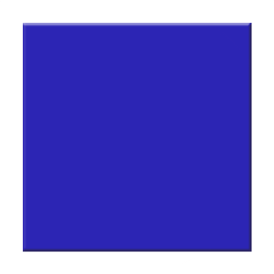
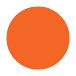

<!DOCTYPE html>
<html>
  <head>
    <title>My New Experiment!</title>
    <script src="jspsych/dist/jspsych.js"></script>
    <script src="jspsych/dist/plugin-html-keyboard-response.js"></script>
    <script src="jspsych/dist/plugin-image-keyboard-response.js"></script>
    <script src="jspsych/dist/plugin-preload.js"></script>
    <link href="jspsych/dist/jspsych.css" rel="stylesheet" type="text/css" />
  </head>
  <body></body>
  <script>

    /* initialize jsPsych */
    var jsPsych = initJsPsych({
      on_finish: function() {
        jsPsych.data.displayData();
      }
    });

    /* create timeline */
    var timeline = [];

    /* preload images */
    var preload = {
      type: jsPsychPreload,
      // modified from reactionTimeTutorial.html - 2 new images added
      images: ['img/blueSquare.png', 'img/orangeHalf.png']
    };
    timeline.push(preload);

    /* define welcome message trial */
    var welcome = {
      type: jsPsychHtmlKeyboardResponse,
      stimulus: "Welcome to the experiment. Press any key to begin."
    };
    timeline.push(welcome);

    /* define instructions trial */
    // Remember to UPDATE!
    var instructions = {
      type: jsPsychHtmlKeyboardResponse,
      /* text is modified from reactionTimeTutorial.html - stimuli now include 
      blueSquare and orangeHalf images */
      stimulus: `
        <p>In this experiment, a blue square or an orange circle will appear in 
        the center of the screen.</p><p>If there is <strong>blue square</strong>, 
        press the letter F on the keyboard as fast as you can.</p>
        <p>If there is an <strong>orange circle</strong>, press the letter J 
        as fast as you can.</p>
        <div style='width: 700px;'>
        <div style='float: left;'></img>
        <p class='small'><strong>Press the F key</strong></p></div>
        <div style='float: right; margin-top: 75px;'></img>
        <p class='small'><strong>Press the J key</strong></p></div>
        </div>
        <p>Press any key to begin.</p>
      `,
      post_trial_gap: 2000
    };
    timeline.push(instructions);

    /* define trial stimuli array for timeline variables */
    var test_stimuli = [
      // stimulus names are updated
      { stimulus: "img/blueSquare.png",  correct_response: 'f'},
      { stimulus: "img/orangeHalf.png",  correct_response: 'j'}
    ];

    /* define fixation and test trials to display the fixation and test stimulus respectively */
    var fixation = {
      type: jsPsychHtmlKeyboardResponse,
      stimulus: '<div style="font-size:60px;">+</div>',
      choices: "NO_KEYS",
      trial_duration: function(){
        return jsPsych.randomization.sampleWithoutReplacement([250, 500, 750, 1000, 1250, 1500, 1750, 2000], 1)[0];
      },
      data: {
        task: 'fixation'
      }
    };

    var test = {
      type: jsPsychImageKeyboardResponse,
      stimulus: jsPsych.timelineVariable('stimulus'),
      choices: ['f', 'j'],
      data: {
        task: 'response',
        correct_response: jsPsych.timelineVariable('correct_response')
      },
      on_finish: function(data){
        data.correct = jsPsych.pluginAPI.compareKeys(data.response, data.correct_response);
      }
    };

    /* define test procedure */
    var test_procedure = {
      timeline: [fixation, test],
      timeline_variables: test_stimuli,
      repetitions: 5,
      randomize_order: true
    };
    timeline.push(test_procedure);

    /* define debrief */
    var debrief_block = {
      type: jsPsychHtmlKeyboardResponse,
      stimulus: function() {

        var trials = jsPsych.data.get().filter({task: 'response'});
        var correct_trials = trials.filter({correct: true});
        var accuracy = Math.round(correct_trials.count() / trials.count() * 100);
        var rt = Math.round(correct_trials.select('rt').mean());

        // code added to calculate reaction time of each stimulus        
        var blueSquare = trials.filter({stimulus: "img/blueSquare.png", correct: true});
        var orangeHalf = trials.filter({stimulus: "img/orangeHalf.png", correct: true});
        var blueSquare_rt = Math.round(blueSquare.select("rt").mean());
        var orangeHalf_rt = Math.round(orangeHalf.select("rt").mean());

        // Text updated to display average rt's for blueSquare and orangeHalf
        return `<p>You responded correctly on ${accuracy}% of the trials.</p>
          <p>Your average response time was ${rt}ms.</p>
          <p>Press any key to complete the experiment. Thank you!</p>
          <p>The average response time for blue squares was ${blueSquare_rt}ms.</p>
          <p>The average response time for half orange circles was ${orangeHalf_rt}ms.</p>`;
      }
    };
    timeline.push(debrief_block);

    /* start the experiment */
    jsPsych.run(timeline);

  </script>
</html>